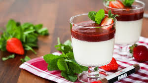
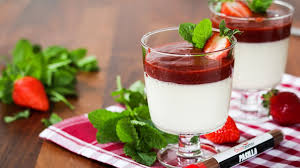

ZNÁMÉ CHUŤĚ


Tento dezert zná snad každý dobrý čech. Poznat ho můžete podle jemného kynutého těsta. Obvykle se plní povidly, mákem či tvarohem, ale pokud chcete experimentovat, můžete zkusit i různé marmelády nebo náplně z ovoce.
Jednoduchý perník v plechu je vynikající a zároveň nenáročný na čas i ingredience, k tomu je ještě velmi jednoduchý, proto je vhodný i pro začátečníky.


 
